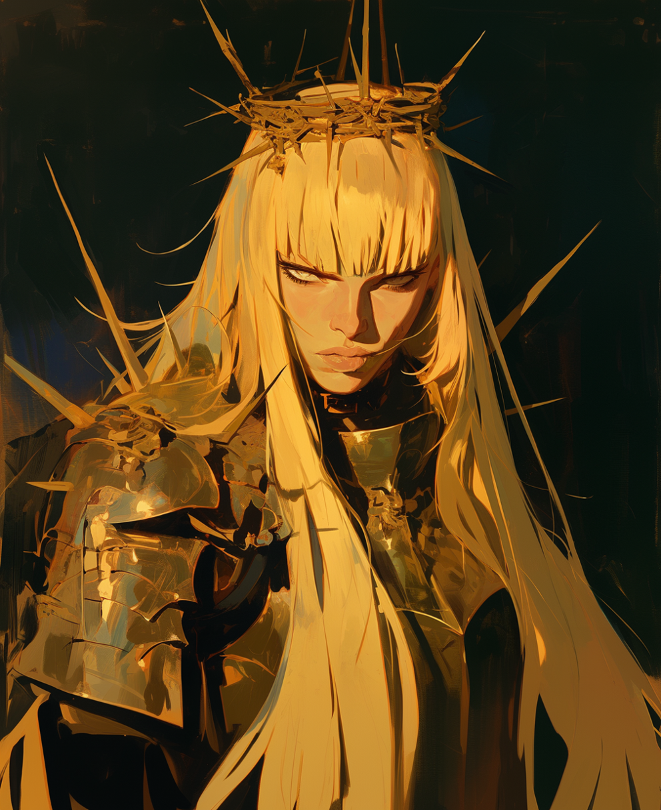

| Adria |
|

|
| Race: |
Human |
| Age: |
28 |
| Height: |
180cm |
| Faction: |
Land of Dawns |
| Occupation: |
Supreme Paladin of the Golden Order |
| Conexiones: |
The Golden Order |
Adria, the Sacred
The name of Adria, known as "The Sacred," resonates like a light that rises in the midst of the prevailing darkness in these lands.
As the unwavering leader of the Golden Order, Adria has been the beacon that has accompanied Gideon and the Land of Dawns since the tumultuous
days of the first rebellion. Her bravery and skill on the battlefield have made her a revered figure, an exceptional knight whose loyalty is
as incandescent as her sword.
Although Adria does not delve into the arts of alchemy like some of her companions, her light shines in a unique and unparalleled way,
using it to punish the wicked with the same intensity with which she illuminates the path of those seeking redemption in the shadows of Fae'Gir.
She has proven to be a pillar of strength and nobility in critical moments, leading with wisdom and sacrificing herself for the common good.
However, her radiant appearance hides secrets and difficult decisions that have forged her path since she took on the dream of Gideon.
Her story intertwines with the resistance against the darkness that threatens to envelop the world in eternal night, and her legacy will
endure in the pages of history as a radiant guide in the darkest times. A beacon that embraces the conviction of a world stripped of magic
and free from those who wield it, as well as from creatures of the night. Adria, with the rigidity of an inquisitor, embarks on an
unrelenting path, pursuing the vision of a future where only purifying light prevails over the shadows that lurk in every corner of the kingdom.